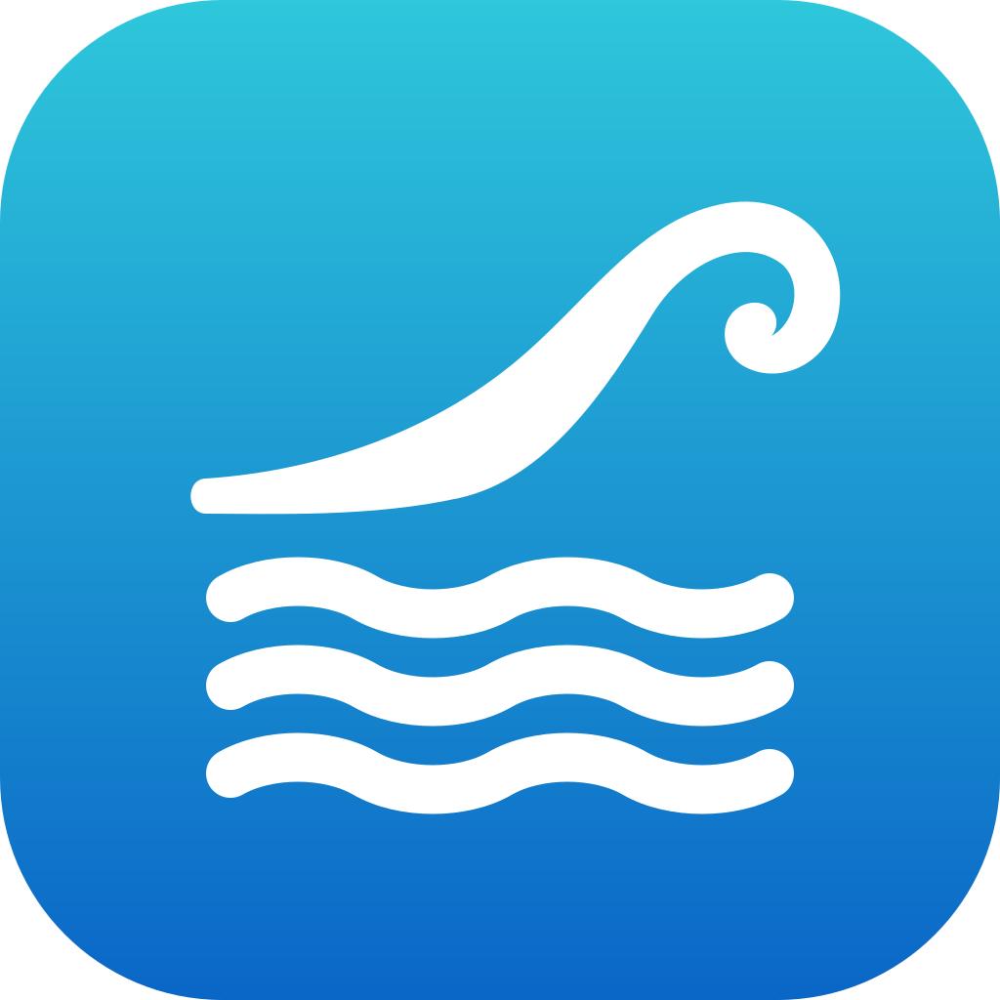
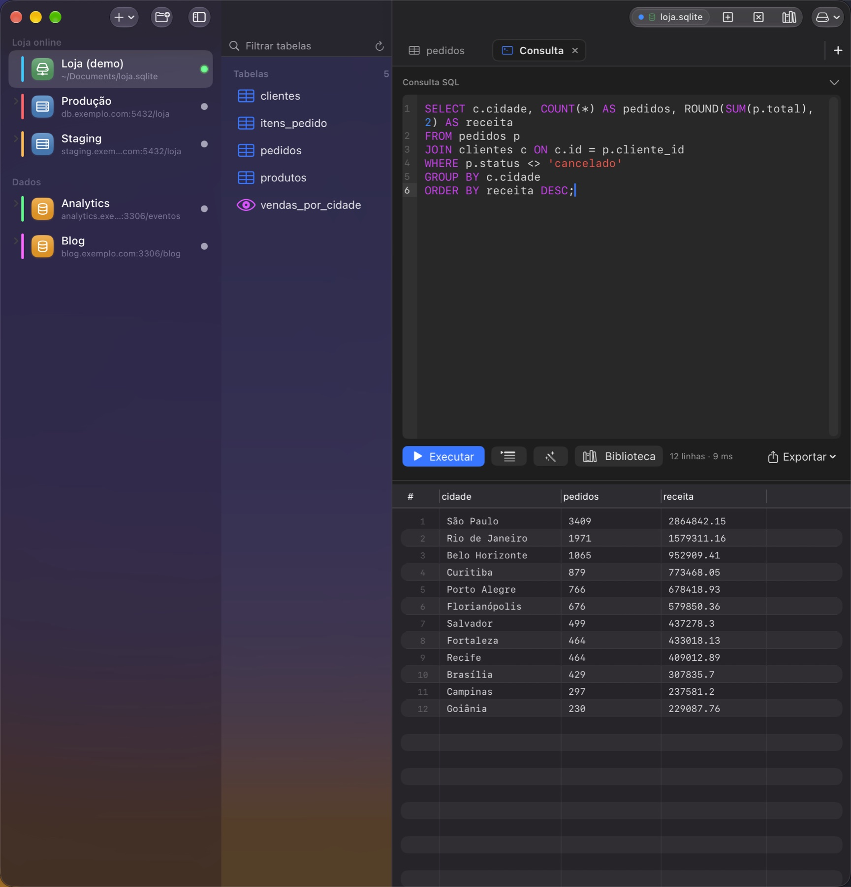
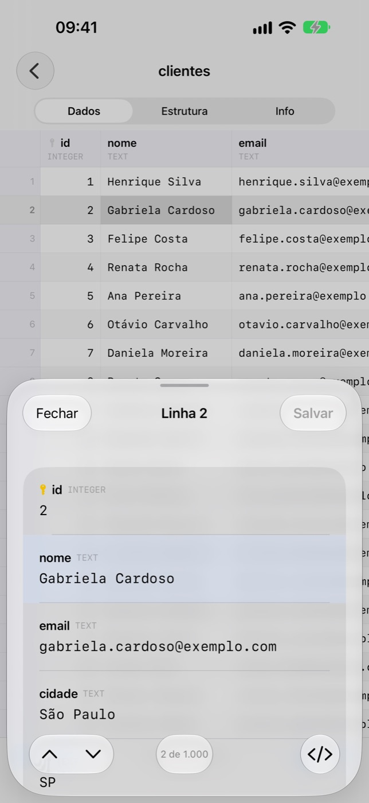
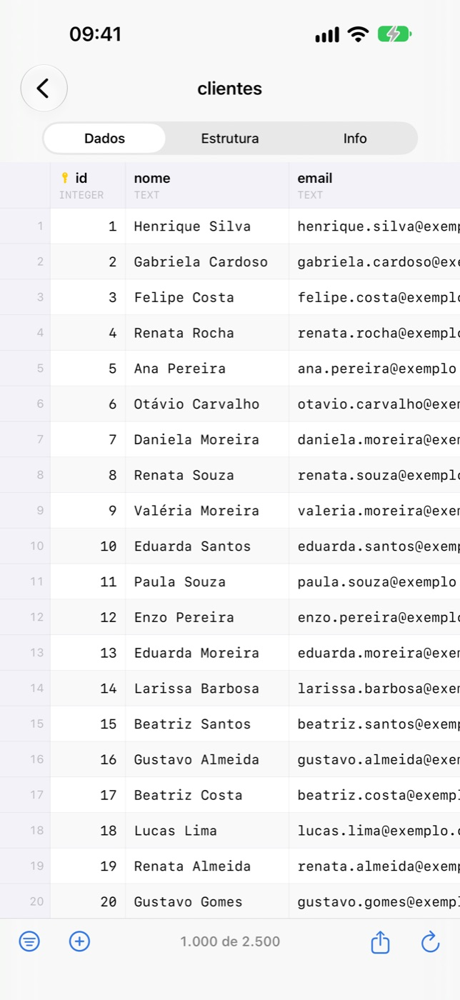
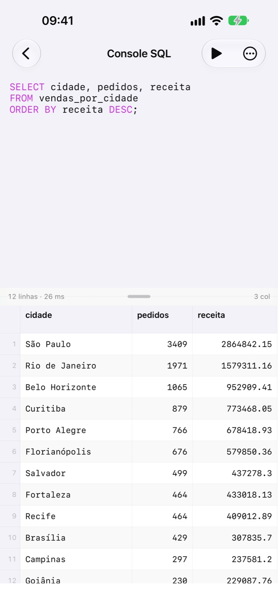
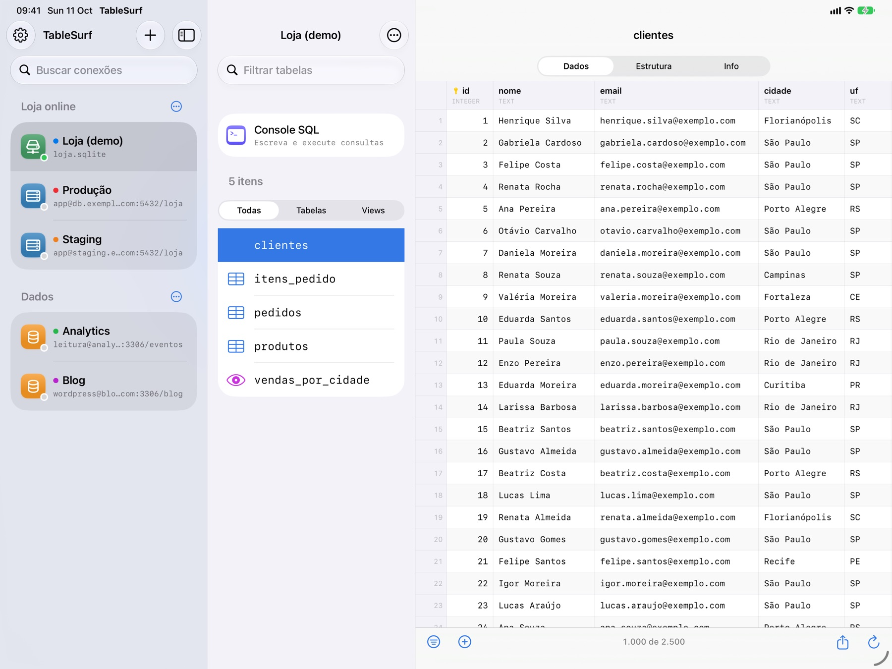

Console SQL
Realce, autocomplete de tabelas e colunas, abas, split view e biblioteca de consultas.

TableSurfPostgreSQL · MySQL · SQLite
Um cliente de banco de dados nativo para Mac, iPhone e iPad. Rápido, leve e feito em SwiftUI — milhões de linhas rolando como se fossem dez.
01 — no Mac
Conexões, tabelas e conteúdo em três colunas. Grid com renderização por célula e paginação em streaming — a página 50 custa o mesmo que a página 1.

02 — recursos
Realce, autocomplete de tabelas e colunas, abas, split view e biblioteca de consultas.
Paginação ancorada na chave primária. Só existem as células visíveis.
Usa o ssh do sistema: ~/.ssh/config e ProxyJump funcionam.
Nunca em disco, nunca em arquivo de config, nunca no ps.
Dumps SQL com progresso e cancelamento. Exporte resultados em SQL, CSV ou JSON.
Edite colunas, índices e chaves; veja relações, triggers e o DDL do schema.
03 — no bolso
Toque numa célula para abrir a linha como formulário. Segure para copiar como INSERT ou filtrar pelo valor. No iPad, três colunas e atalhos de teclado.




04 — privacidade
Sem analytics, sem rastreamento, sem anúncios, sem servidor próprio. O app só conversa com os bancos e túneis que você configura.
Ler a política completa →05 — código aberto
Feito nas horas vagas, principalmente pra uso próprio. Issues, ideias e pull requests são muito bem-vindos.
$ git clone https://github.com/wagnerfnds/TableSurf $ cd TableSurf && xcodegen generate $ ./install.sh # compila, instala e abre 🏄